Career
This page is a summary of my career since and including graduating from Northwestern University. In writing out highlights and memories here, I can provide a little more detail and embellishment than I would put on my resume.
My resume can also be downloaded here.
SpotCo
The world’s leading entertainment advertising and branding agency. SpotCo has been behind some of the most iconic Broadway campaigns since 1996 such as Hamilton, Chicago, Rent, Avenue Q and more.
- Account Director (2018 - Present)
As Account Director, I lead strategy for internal teams and am the primary liaison with the client.
- 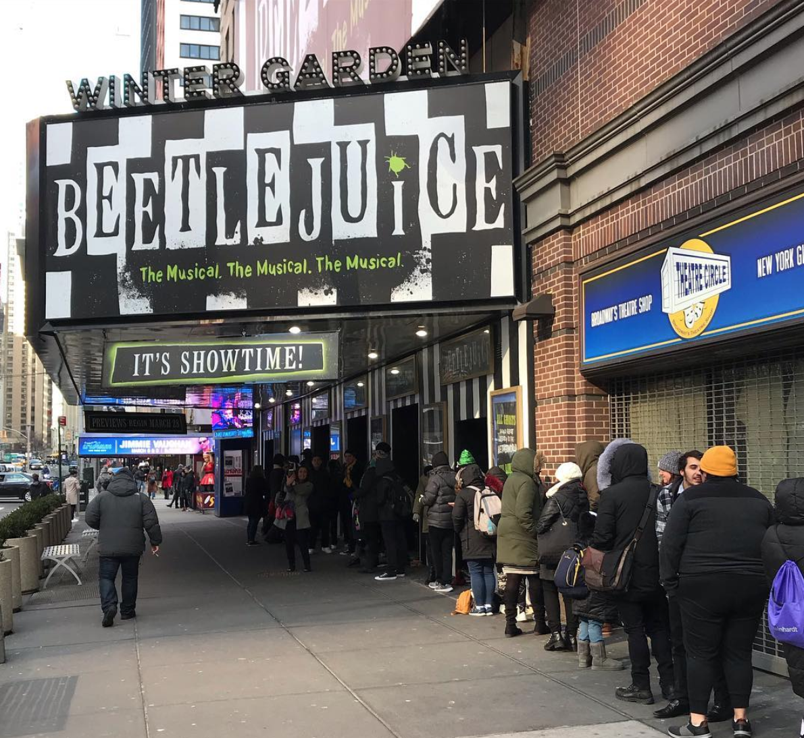
My clients included Scott Rudin Productions, Warner Bros Theatre Ventures, and Lincoln Center Theater on shows like The Book of Mormon, My Fair Lady, Flying Over Sunset and more, but perhaps the most fulfilling and unique challenge during this time was Beetlejuice the Musical.
I led the Beetlejuice the Musical campaign through a strategically savvy and record-breaking period of growth. The campaign relied on a smart approach to audience data, an engaging and boundary-pushing approach to social content, and a distinct creative voice that cut through the critics directly to our target audience.
- 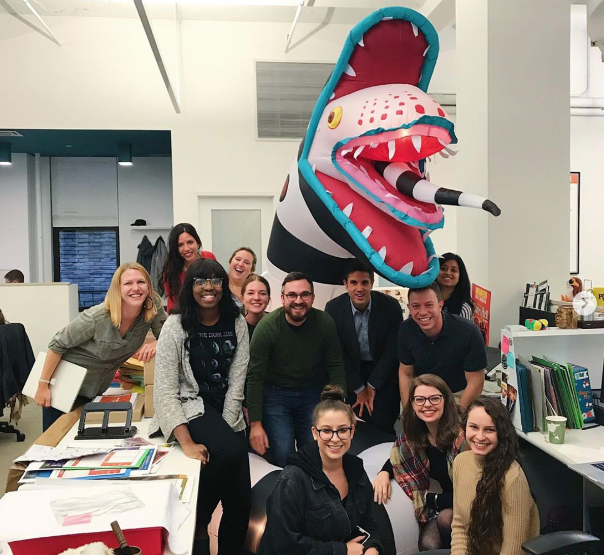
We dove into TikTok in summer 2019, producing content, running contests, and incentivizing our fans to keep cosplaying, lip-syncing and engaging. Our hashtags achieved over a trillion views on the platform.
In October we executed a fully integrated campaign including new creative, live events, a dedicated website, and social media activations. Month-over-month sales grew 32%.
Forbes recognized our "strategic marketing campaign" and Variety dug deep into the success, noting that the show "received 100 million streams in 21 weeks, faster than 'Dear Evan Hanson' or 'Mean Girls,' and narrowly behind 'Hamilton,' which took 18 weeks to hit that plateau."

The New York Times also marveled that the show "has been building at the box office, with social media and special engagement efforts part of the strategy," recognizing the success being "fueled by strong word of mouth, particularly among first-time theatergoers, and a shift in marketing strategy, which pivoted from emphasizing the show’s irreverence to celebrating its sense of fun."
- 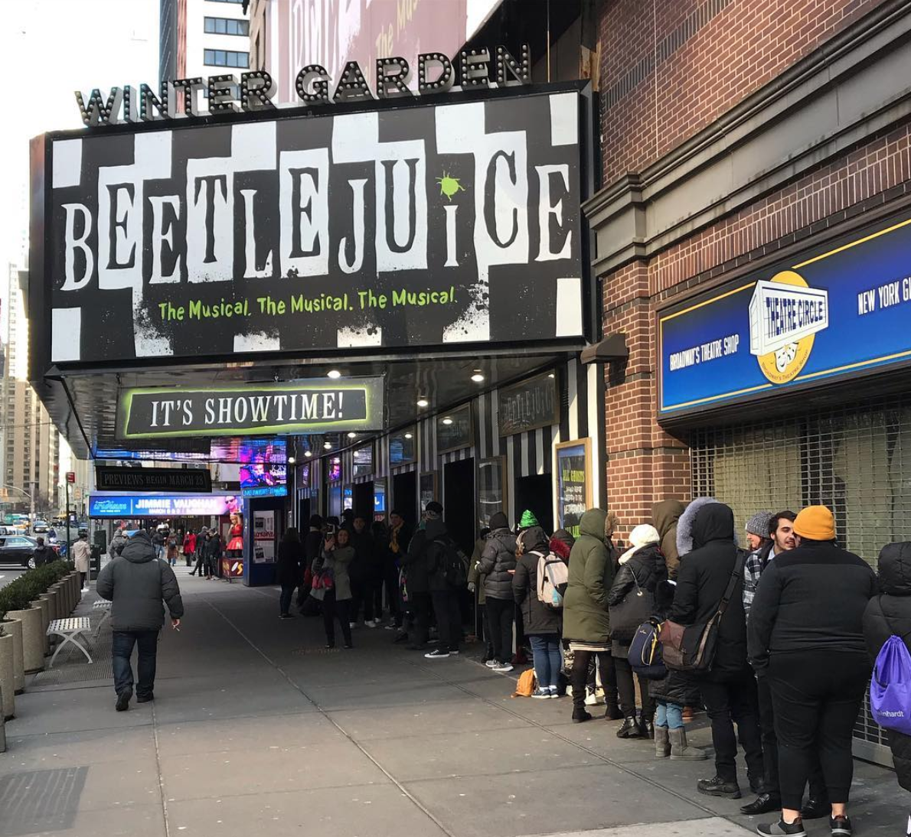
- Media Manager (2017 - 2018)
As Media Manager I was responsible for ideating, negotiating and executing fully integrated media campaigns for clients including digital, social, broadcast, print and outdoor.
- 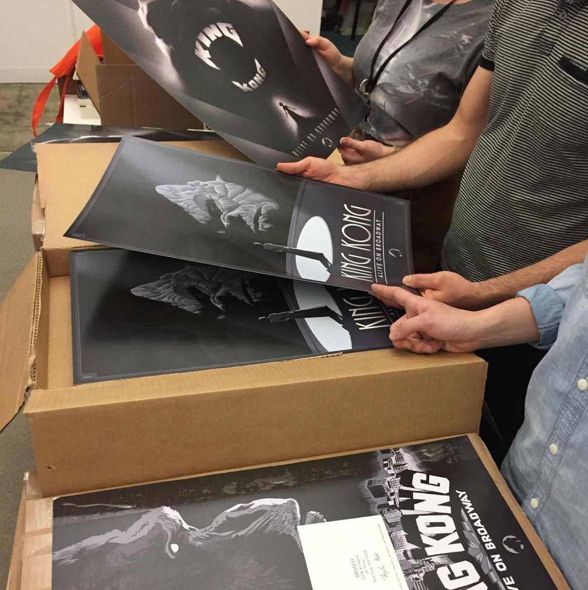
I got to lead media strategy for some fun shows during that time including Meteor Shower by Steve Martin, King Kong the Musical, The Ferryman and an experimental new live experience from Ubisoft called Just Dance Live.
A highlight for me during that time was executing a content-based influencer campaign for King Kong to reach an audience new to Broadway, the geeky spectacle-driven crowd. We commissioned three custom posters for the project from Olly Moss, Francisco Francavilla and Laurent Durieux. We also gave special editions of the posters away at NYC comic book stores on Free Comic Book Day. You can read more about the promotion in Vulture here.
- 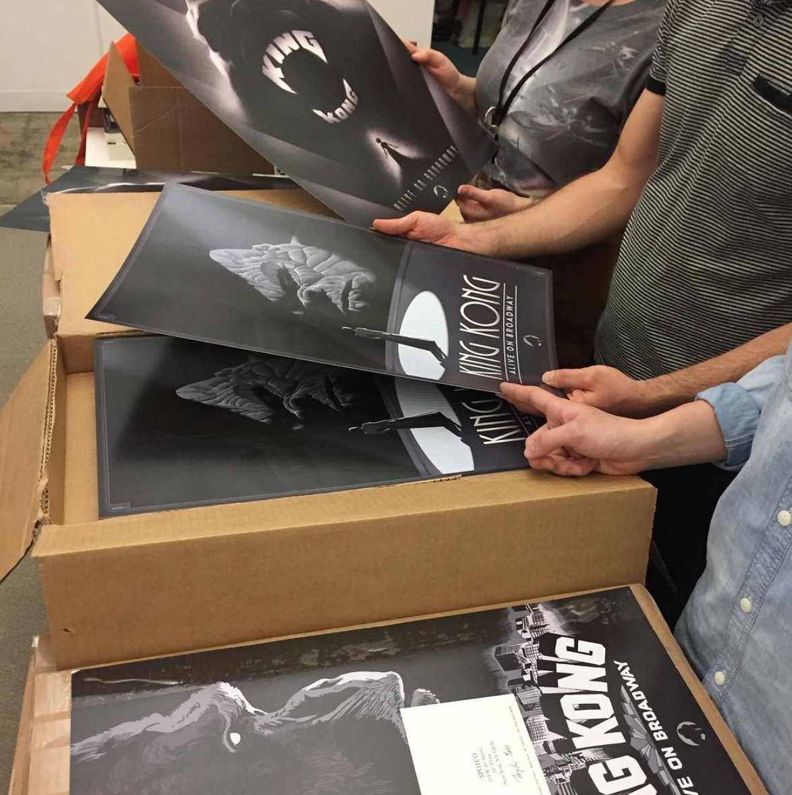
- Associate Digital Media Manager (2015-2017)
As Associate Digital Media Manager I executed digital campaigns in AdWords, Facebook Ads, Instagram, Snapchat and DoubleClick Bid Manager. I also compiled digital reporting to share with internal teams and clients.
I got to work on a lot of great shows in this role, including leading digital media strategy on Natasha, Pierre and the Great Comet of 1812, Waitress, Chicago and Eclipsed. I also provided support for Hamilton, Fun Home, The Curious Incident of the Dog in the Nighttime, The King & I, Kinky Boots, and Gentleman's Guide to Love and Murder.
The Great Comet was a very exciting show to work on as the lead digital media manager. We knew we wanted to make vibrant, immersive and eye-popping ads on digital media. I pushed our creative and digital teams to try Facebook Canvas ads and we leaned a lot into Pandora advertising for the indie music appeal. That show was unlike anything I've seen on Broadway and we knew the campaign needed that approach as well.
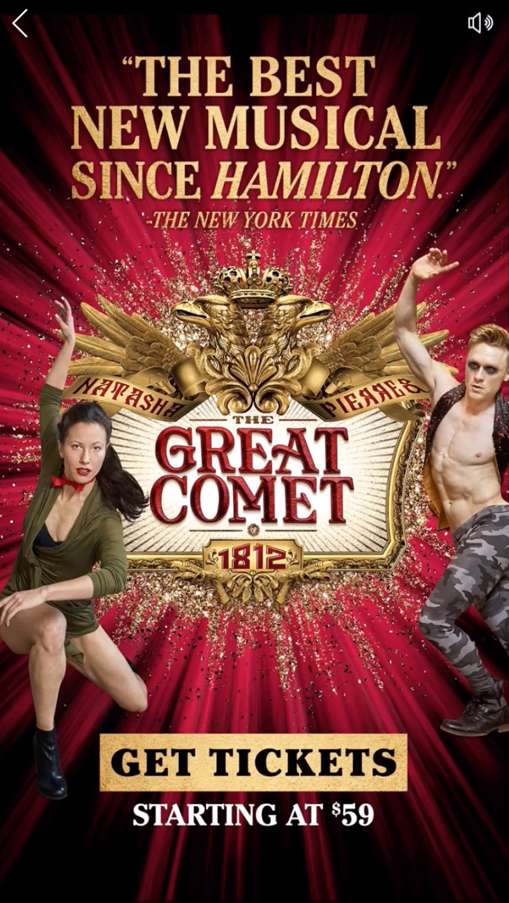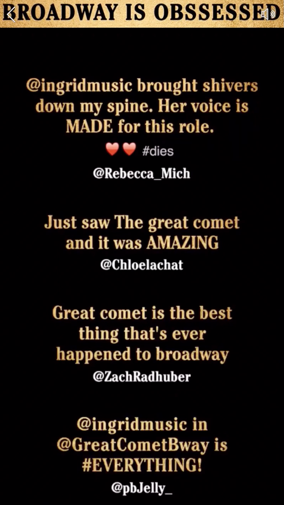
Carol Fox & Associates
An award-winning PR, branding, digital marketing and events agency based in Chicago and specializing in lifestyle, hospitality, arts, education and entertainment.
- Account Executive (2015)
As Account Executive, I created marketing plans involving advertising, grass-roots campaigns, promotions, and direct mail. Often executed multiple stages of these projects, including copy-writing, editing, routing with designers and trafficking for final delivery.
-
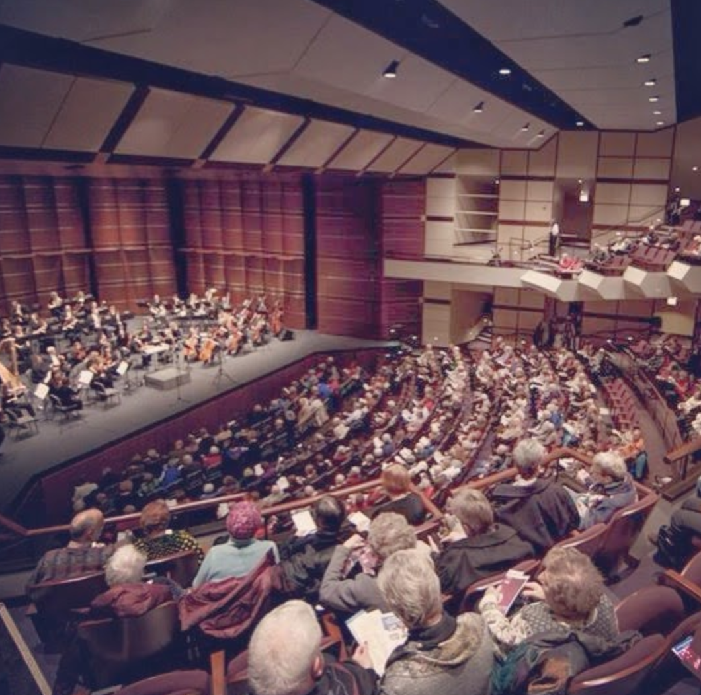
I got to work with a fun smorgasbord of Chicago-area organizations including Chicago Opera Theater, the Chicago Public Library Foundation, the McAninch Arts Center at the College of DuPage, Natya Dance Theater and more.
- 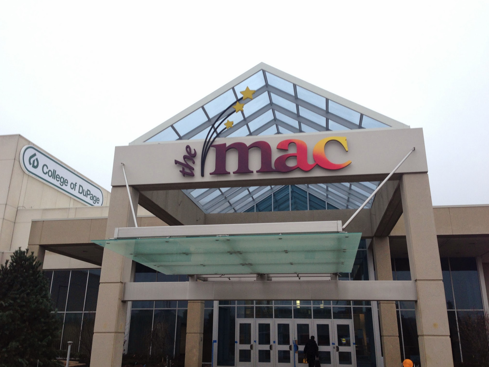
The McAninch Arts Center provided the most challenge, as a big performing arts center presenting dozens of acts during the year ranging from comedy, music, films, dance and theater. We had to manage a year-long media plan, a massive direct mail piece for subscribers, and even oversaw the full re-design of their website.
Northwestern University
I graduated from the School of Communication with a Bachelor of Arts in 2013. As a student I studied theatre along with coursework in accounting, web design, production and marketing.
- Extra-curriculars and Activities
-
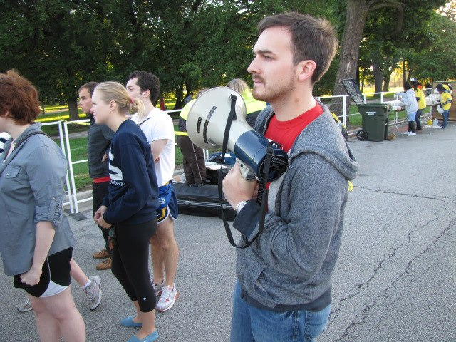
I was heavily involved in theatrical producing. I was the Executive Business Producer and Co-President for The Dolphin Show, the largest student-produced musical in America. In 2013, we produced My Fair Lady with a team of 150 students and a fundraised budget of $60,000. The show was a hit, growing Dolphin's audience by 38% for a record-breaking year in sales, along with lifelong friendships and memories.
- 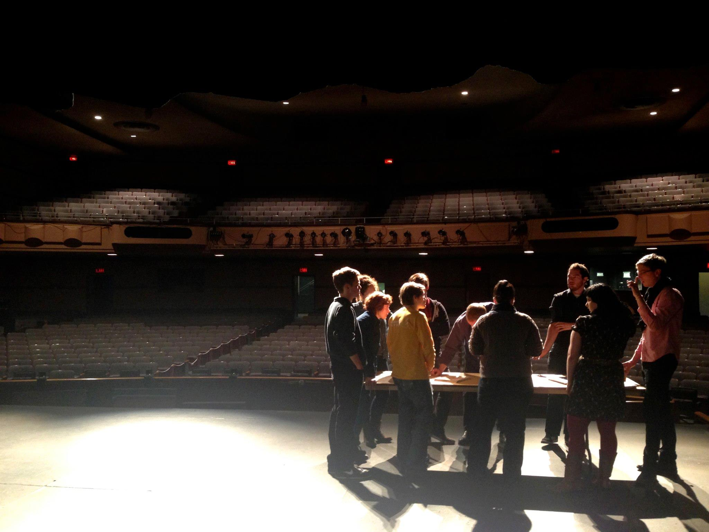
I was producer on several other student productions including the play for young audiences Doors, the musical Cabaret, and an outdoor stunt show called Showdown. Each of these presented their own unique challenges and I learned a lot from these experiences.
- 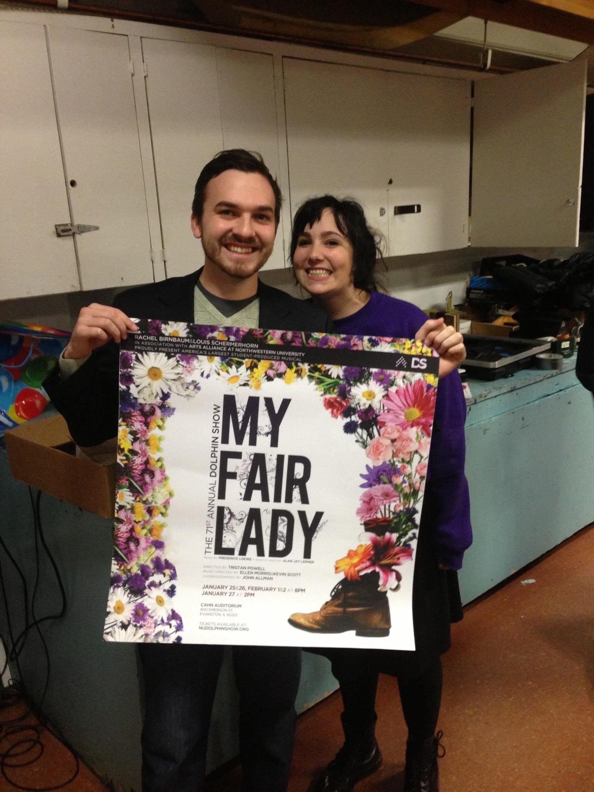
I also served multiple roles on the board of the student organization Purple Crayon Players, which received the 2010 Winnifred Ward Outstanding New Children's Theatre Company Award. My time as Marketing Director and Production Manager taught me a lot about an organization's responsibility to its artists and community.